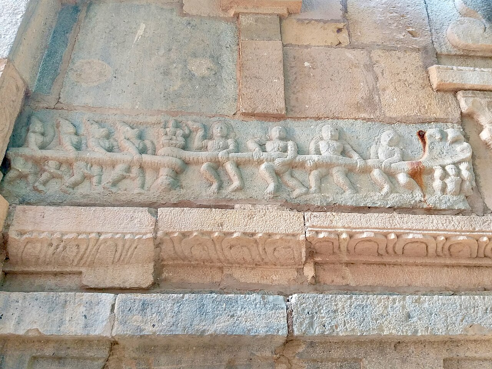
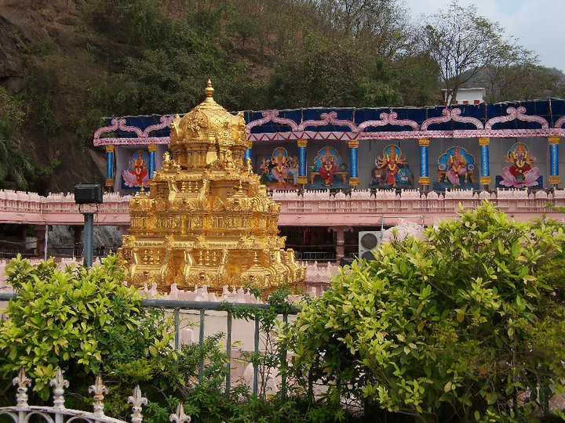
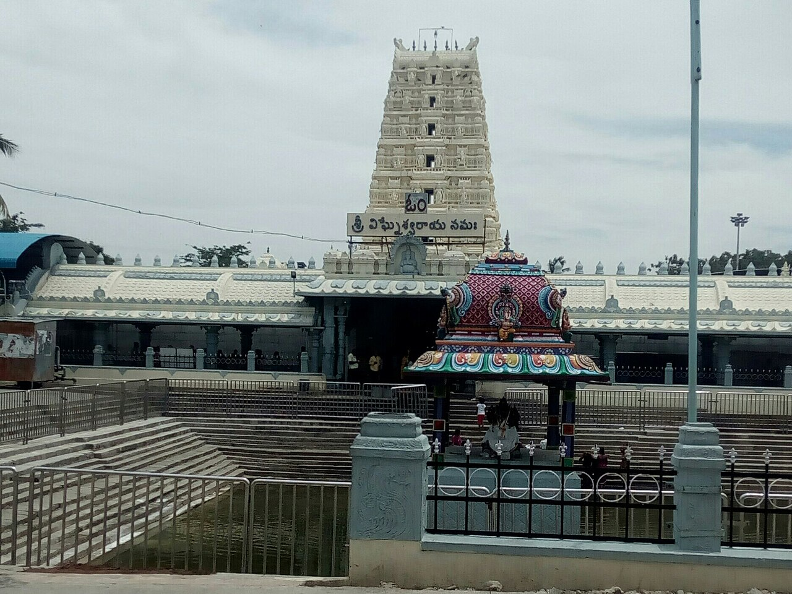
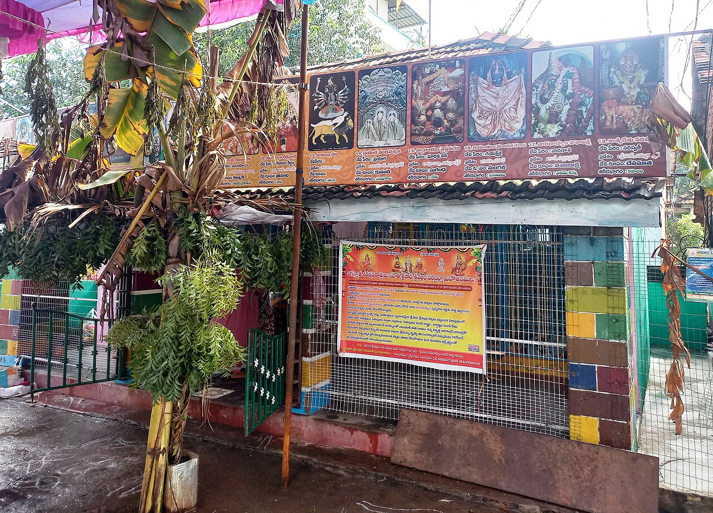
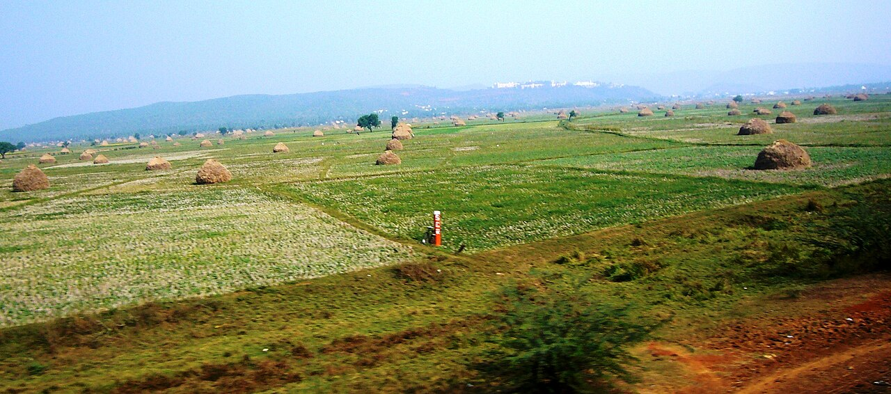
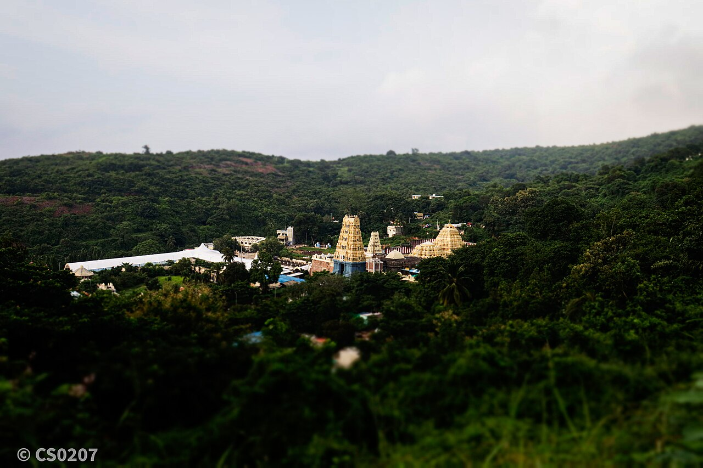
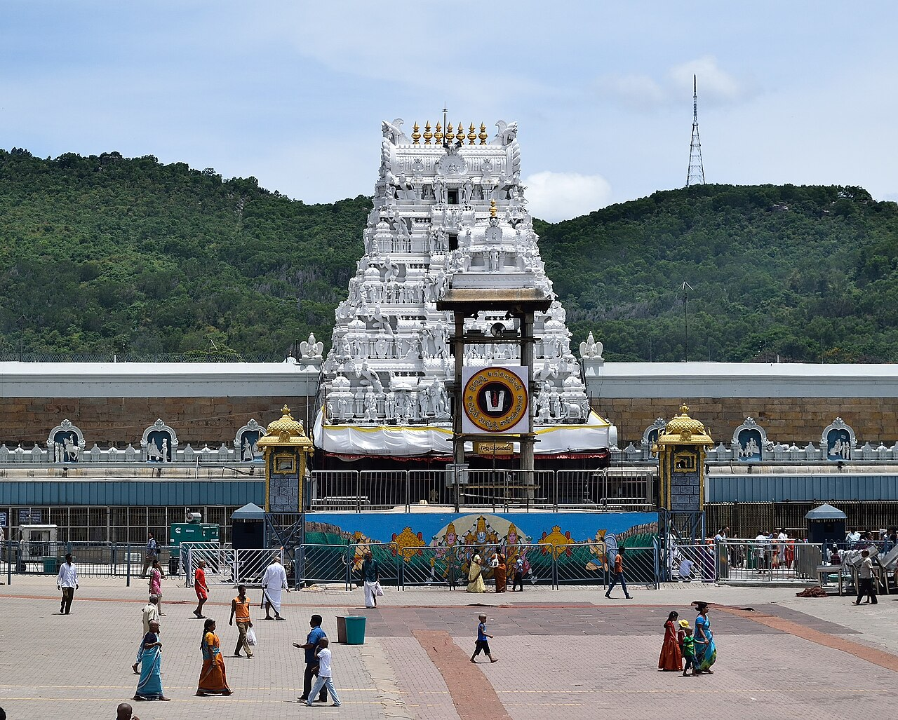
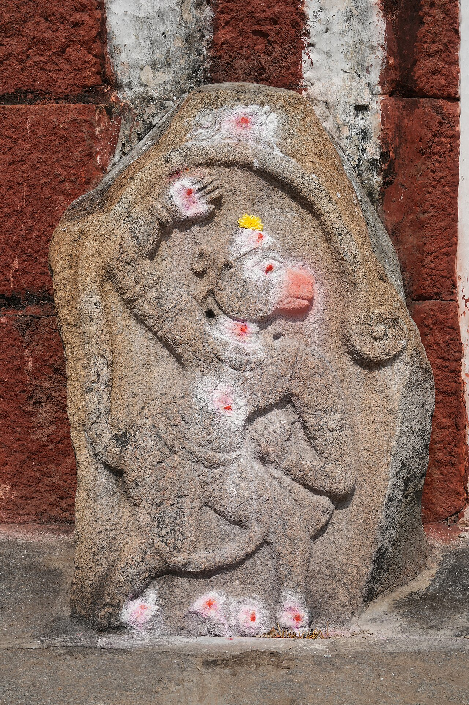

Ahobilam Lakshmi Narasimha Temples
Amareswara Temple, Amaravati (Pancharama)
Devuni Kadapa Venkateswara Temple
Govindaraja Swamy Temple, Tirupati
ISKCON Temple, Vijayawada
Kali Temple, Visakhapatnam

Kanaka Durga Temple, Vijayawada

Kanipakam Vinayaka Temple
Kodanda Rama Temple, Vontimitta
Lakshmi Narasimha Swamy Temple, Antarvedi

Mallikarjuna–Bhramaramba Temple, Srisailam
Manikyamba Devi Temple
Padmavathi Temple, Tiruchanur
Penchalakona Narasimha Temple

Puruhutika Devi Temple
Ramalingeswara Swamy Temple, Eluru
Sampath Vinayaka Temple, Visakhapatnam

Satyanarayana Swamy Temple, Annavaram

Simhachalam Varaha Lakshmi Narasimha Temple
Sri Mukhalingam Temple
Sri Ranganathaswamy Temple, Nellore
Sri Venkateswara Swamy Temple, Dvaraka Tirumala

Sri Venkateswara Temple, Tirumala

Srikalahasteeswara Temple
Talpagiri Ranganatha Swamy Temple, Nellore
Undavalli Cave Temples
Veerabhadra Temple, Kadapa
